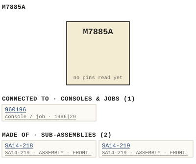

M7885A
| Type | module |
| Category | COMMUNICATION |
| Try it | simulator & front panel · download package (zip) |
| Earliest dated evidence | 1994|27 — original file date |
| Evidence | saved 1994-07-18: WBSps Engineering from H drive-20261018T013433Z-1-002/WBSps Engineering from H drive/WBSps - Word Perfect Manuals/M7885A.WP |
| Confidence | medium |
| All years found | 1994|27 |
| Used in jobs | 960196 (1996|29) |
| Folder | Consoles/1990-1999/960196 |
| Folder | DOCUMENTS/RECENT SCANS/WBSps.ca 20210323 - Scans |
| Folder | Modules/COMMUNICATION/M7885A |
Connections
What it is made of and what it is part of.
Pictures


M7885A.connections.svg 1996 - 960196 - DOC - Scan_20210323.jpg
1996 - 960196 - DOC - Scan_20210323.jpg 1996 - 960196-04-004 - M7885A ASSIGNMENT TERMINAL FRONT PANEL LAYOUT - ISS 1.jpg
1996 - 960196-04-004 - M7885A ASSIGNMENT TERMINAL FRONT PANEL LAYOUT - ISS 1.jpgPinout & connections
Documents (1)
| Year | File | |
|---|---|---|
| 1994|27 | 1994 - M7885A - M7885A - 14-218-02-001 - SA14-219 - ASSEMBLY - FRONT PANEL.wp | note |
Photos & scans (3)
| Year | File | |
|---|---|---|
| 1996|29 | 1996 - 960196 - DOC - Scan_20210323.jpg | note |
| 1996|29 | 1996 - DOC - Scan_20210323 (6).jpg | note |
| 1996|29 | 1996 - M7885A - DOC - Scan_20210323.jpg | note |


Sub-assemblies & parts used (2)
| Item | What | Family | Year | How we know |
|---|---|---|---|---|
| SA14-218 | SA14-219 - ASSEMBLY - FRONT PANEL | Circuit boards (SA14-nnn) | drawing filed with it | |
| SA14-219 | SA14-219 - ASSEMBLY - FRONT PANEL | Circuit boards (SA14-nnn) | drawing filed with it |
Parts list — board M7885A (6 parts)
From M7885A.WP; also in timelines/data/bom.csv.
| Ref | Part | Value | Manufacturer | Mfr part no. |
|---|---|---|---|---|
| SA14-218 | Controller Assembly | WBS | SA14-218 | |
| SA14-219 | Front Panel PCB Assembly | " | SA14-219 | |
| F1 | Fuse, 1.5 Amp SB | Buss | MDL-1.5 | |
| PS1 | Power Supply | Lambda | LVS-45E-24 | |
| J3 | 9 Pin Cover C/W Spring & Slide | TEEE | TCE9 | |
| SA14-218 | Fish Paper | " | C7885-012 |
Consoles & jobs it is connected to (1)
Their own drawings name this module.
| Job | Year | Drawing | Page |
|---|---|---|---|
| 960196 | 1996|29 | 1996 - 960196-04-004 - M7885A ASSIGNMENT TERMINAL FRONT PANEL LAYOUT - ISS 1.jpg | 1 |
Named in other drawings & documents (3)
| File | Page |
|---|---|
| 1995 - M405P - ITEMIMP(1).TXT (2).docx | 1 |
| 1995 - M405P - ITEMIMP(1).TXT.docx | 1 |
| 1995 - M405P - ITEMIMP.TXT.docx | 1 |
From the manuals
Each manual split into its sections. Text that is the same in many Ward-Beck manuals (warranty, address, standard notes) is kept once on the Boilerplate page and linked.
General description (1)
Description — 208 words · 1994 - M7885A - M7885A - 14-218-02-001 - SA14-219 - ASSEMBLY - FRONT PANEL.wp, page 1
MFG MFG PART NUMBER
218J10 Cover, 6 Pos, End Panduit EC100F-6
J3 9 Pin Cover C/W Spring & Slide TEEE TCE9
9 Pin "D" Female Connector Souriau FDE-9S (Solder Type)
Connector Locking Brackets " TFB
SA14-218 Fish Paper " C7885-012
WBS recommends the use of replacement parts made by the specified manufacturers for continued optimum equipment performance.
SECTION C. GENERAL
LAMBDA POWER SUPPLY
M7885A ASSIGNMENT TERMINAL
To address the requirements of certain regulatory agencies, M7885A assignment terminals may be installed with Lambda LVS-45E series of power supplies or an equivalent.
The power supply used is an LVS-45E-24. It provides +24V dc to the M7885A circuitry.
The 24V dc is decoupled down to 5V dc by an on board regulator, to power the SA14-218 controller assembly and the SA14-219 front panel display assembly.
The following pages are copies of the manufacturers supplied documentation. This includes information pertaining to specifications and terminations. This power supply module is considered as a non-serviceable item and upon failure is totally replaced. PS1 Power Supply Lambda LVT-45E-24 24V DC
Power Line Filter Curtis F3000AA06
Filter Lugs Hollingsworth XS09723S
Power Supply Molex 5199-10-63-3044 AC Receptacles
Power Supply " " DC Receptacles
Power Supply " 08-70-1030 Receptacles crimp terminals M7885A
ASSIGNMENT TERMINAL MANUAL ISSUE #1
MW94001/M7885A.WP
Installation (1)
Connections — 798 words · 1994 - M7885A - M7885A - 14-218-02-001 - SA14-219 - ASSEMBLY - FRONT PANEL.wp, page 1
Only P3 is the applicable data connector for the M7885A operation. Refer to the drawing on page 6-1 for details of the data interconnect. Connector P2 is not applicable to the operation of the M7885A.
6) PANEL #2
Connectors J4 and P5 are not applicable to the operation of the M7885A. These connectors are an integral part of the standard SA14-218 controller assembly.
7) PANEL #3 AND #4
These connectors are not supplied as part of the M7885A.
8) & 9) AC FUSE & AC POWER CORD
The fuse is for primary AC power. The rating is 1.5 ampere slow blow, 115 or 230 volt, of the 3AG type. Initial Inspection
After removal of all packaging material, inspect the Assignment Terminal for any loose components or for any physical damage that may have occurred in transit. If there is any damage, contact the carrier and file a claim immediately. Do not discard packing material until the carrier or his representative has noted the damage.
The M7885A is normally supplied with a 9 pin D connector, for the serial data port.
Determine the following:
1) The keypad and designation strips are labelled according to the systems definition requirements, or to the default generic terms.
2) The correct software version is installed as per MicroCOM II systems summary (refer to system manuals for detail).
Power Requirements
The M7885A operates directly from the AC power line. The integral modular power supply is accessible by removing the top and bottom covers of the terminal.
Note: Service and adjustment of the power supply should only be performed by personnel knowledgeable with the technology employed, and with the correct isolated power sources and test equipment. High voltages are present and extreme caution must be taken.
The power supply will accept either 115V or 230V AC but may have to be strapped internally for the required operation. Refer to section C of this manual for the type of power supply installed and the required strapping. The terminal, when supplied with a communications system, will normally be strapped for the customers AC power source.
Note: the power supply will be damaged if jumpered or strapped for 115 volts and operated on 230 volts AC.
Mounting:
The M7885A is designed for standard nineteen inch rack mounting, requiring two rack units of vertical space (3-1/2 inches). The depth requirement with connectors in place is in the order of 12 inches (305 mm). The M7885A weighs 11 lbs. (5 kg.).
Matrix Connections:
The M7885A Assignment Terminal connects to the central matrix via a single pair data cable. Belden audio cable 8451 may be used for this data connection. Refer to page 6-1 for data connector layout details. Insure that the phase of the serial data pair is correct and the common return (shield) is connected throughout.
The assignment terminals are connected to anyone of the last four data ports of the central matrix. Ports 45 to 48 for a 48x48 system, or ports 93 to 96 for a 96x96 system. If the audio inputs and outputs are required as well as the serial data port, a ́Y ́ type cable connection may have to be made or parallel data port connectors installed. Refer to system interconnect drawings for detail.
Caution: Do not make cable solder connections with connectors installed and power applied to the assignment terminal or the central matrix. Data port devices could be damaged via power line leakage from soldering tools.
Assign Terminal Setup
The IFB matrix bus definitions and IFB program sound Mode definitions must first be made from the central assignment computer. This information must be sent to the MicroCOM II central matrix as part of the overall system configuration.
After the initial IFB system setup it will be necessary to manually enter a full set of assignments from the M7885A with it connected on line to the system.
The IFB program sound assignments from the M7885A are retained in memory in the M8504B input controller. These assignments in turn are passed on to the M8506B output controller, where they are acted upon.
IFB program sound assignments may originate either from the M7885A or the central assignment computer, but not concurrently. The intent is to use one or the other, but not both. The assignment displays of the M7885A will blank off (after approx. 5 sec) if IFB program sound source assignments are made from the central assignment computer, as they become indeterminate.
Making an assignment to any IFB output from the M7885A results in all assignments originating from the assignment terminal and they will be changed accordingly.
To assist in setting up the IFB program sound assignments on the M7885A, any keypad operation will result in the displays being active for approximately 30 seconds. This applies whether the terminal is on line or not